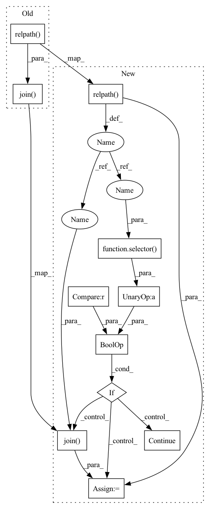

Pattern ID :13014
Before Change
try:
for obj in self.bucket.objects.filter(Prefix=prefix):
found = True
_dst = os.path.join( dst, os.path.relpath( obj.key, prefix))
dst_dir = os.path.dirname(_dst)
os.makedirs(dst_dir, exist_ok=True)
logging.debug(f"Downloading s3://{self.bucket_name}/{obj.key} to {_dst}")After Change
try:
for obj in self.bucket.objects.filter(Prefix=prefix):
found = True
relname = os.path.relpath( obj.key, prefix)
if selector is not None and not selector(relname) :
continue
_dst = os.path.join( dst, relname )
dst_dir = os.path.dirname(_dst)
os.makedirs(dst_dir, exist_ok=True)
logging.debug(f"Downloading s3://{self.bucket_name}/{obj.key} to {_dst}")In pattern: SUPERPATTERN
Frequency: 3
Non-data size: 11
Instances Fragment ID: 44009177
Project Name: determined-ai/determined
Commit Name: 32a34bb3c72c0578cc4b57b81309e3ff4e4f5d49
Time: 2022-12-13
Author: 35503877+aciborowska@users.noreply.github.com
File Name: harness/determined/common/storage/s3.py
M Class Name: S3StorageManager
N Class Name: S3StorageManager
M Method Name: download(4)
N Method Name: download(3)
M Parent Class: storage.CloudStorageManager
N Parent Class: storage.CloudStorageManager
M File Name: harness/determined/common/storage/s3.py
N File Name: harness/determined/common/storage/s3.py
M Start Line: 102
M End Line: 110
N Start Line: 103
N End Line: 118
Before Change
// directory-like blob.
for blob in self.bucket.list_blobs(prefix=path):
found = True
_dst = os.path.join( dst, os.path.relpath( blob.name, path))
dst_dir = os.path.dirname(_dst)
if not os.path.exists(dst_dir):
os.makedirs(dst_dir, exist_ok=True)
After Change
// directory-like blob.
for blob in self.bucket.list_blobs(prefix=path):
found = True
relname = os.path.relpath( blob.name, path)
if selector is not None and not selector(relname) :
continue
_dst = os.path.join( dst, relname)
dst_dir = os.path.dirname(_dst)
if not os.path.exists(dst_dir):
os.makedirs(dst_dir, exist_ok=True)
Fragment ID: 44009176
Project Name: determined-ai/determined
Commit Name: 32a34bb3c72c0578cc4b57b81309e3ff4e4f5d49
Time: 2022-12-13
Author: 35503877+aciborowska@users.noreply.github.com
File Name: harness/determined/common/storage/gcs.py
M Class Name: GCSStorageManager
N Class Name: GCSStorageManager
M Method Name: download(4)
N Method Name: download(3)
M Parent Class: storage.CloudStorageManager
N Parent Class: storage.CloudStorageManager
M File Name: harness/determined/common/storage/gcs.py
N File Name: harness/determined/common/storage/gcs.py
M Start Line: 83
M End Line: 92
N Start Line: 86
N End Line: 100
Before Change
found = False
for blob in self.client.list_files(self.container, file_prefix=src):
found = True
_dst = os.path.join( dst, os.path.relpath( blob, src))
dst_dir = os.path.dirname(_dst)
os.makedirs(dst_dir, exist_ok=True)
// Only create empty directory for keys that end with "/".After Change
found = False
for blob in self.client.list_files(self.container, file_prefix=src):
found = True
relname = os.path.relpath( blob, src)
if selector is not None and not selector(relname) :
continue
_dst = os.path.join( dst, relname)
dst_dir = os.path.dirname(_dst)
os.makedirs(dst_dir, exist_ok=True)
// Only create empty directory for keys that end with "/". Fragment ID: 44009175
Project Name: determined-ai/determined
Commit Name: 32a34bb3c72c0578cc4b57b81309e3ff4e4f5d49
Time: 2022-12-13
Author: 35503877+aciborowska@users.noreply.github.com
File Name: harness/determined/common/storage/azure.py
M Class Name: AzureStorageManager
N Class Name: AzureStorageManager
M Method Name: download(4)
N Method Name: download(3)
M Parent Class: storage.CloudStorageManager
N Parent Class: storage.CloudStorageManager
M File Name: harness/determined/common/storage/azure.py
N File Name: harness/determined/common/storage/azure.py
M Start Line: 58
M End Line: 63
N Start Line: 61
N End Line: 71